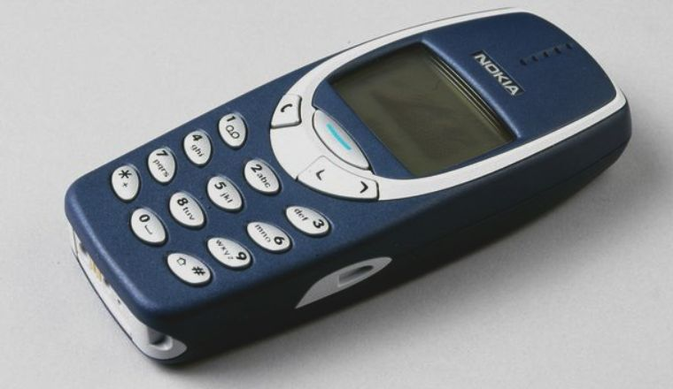

Nokia 3310
Описание товара:
Двухдиапазонный (GSM 900/1800) сотовый телефон фирмы Nokia

Характеристики товара:
Основные:
- Вес:133 г
- Размеры (ШxВxТ):48x113x22 мм
- Тип экрана:монохромный
- Размер изображения:48x84
- Тип мелодий:обычные
- Число мелодий:35
- Виброзвонок:есть
- Редактор мелодий:есть
Мультимедийные возможности:
- Игры:есть
- Стандарт:GSM 900/1800
- Доступ в интернет:нет
- Тип аккумулятора:NiMH
Автономность:
- Емкость аккумулятора:900 мА·ч
- Емкость дополнительного аккумулятора:900 мА·ч
- Время разговора:4 ч
- Время ожидания:260 ч
- Время заряда:4:30 ч:мин
- Режим разговора 4.5 ч
- Режим ожидания 260 ч
Подробное описание товара
Обмен текстовыми сообщениями с помощью Nokia 3310 доставит вам большое удовольствие. Новая функция чата позволяет
общаться с друзьями и родственниками, причем вы всегда сможете восстановить ход разговора. Добавьте
индивидуальности вашим сообщениям с помощью графических символов. В Nokia 3310 имеется большой запас встроенных
шаблонов, которые помогут лучше выразить свои чувства в сообщениях. Nokia 3310 дает возможность погрузиться в
мир увлекательных электронных игр.